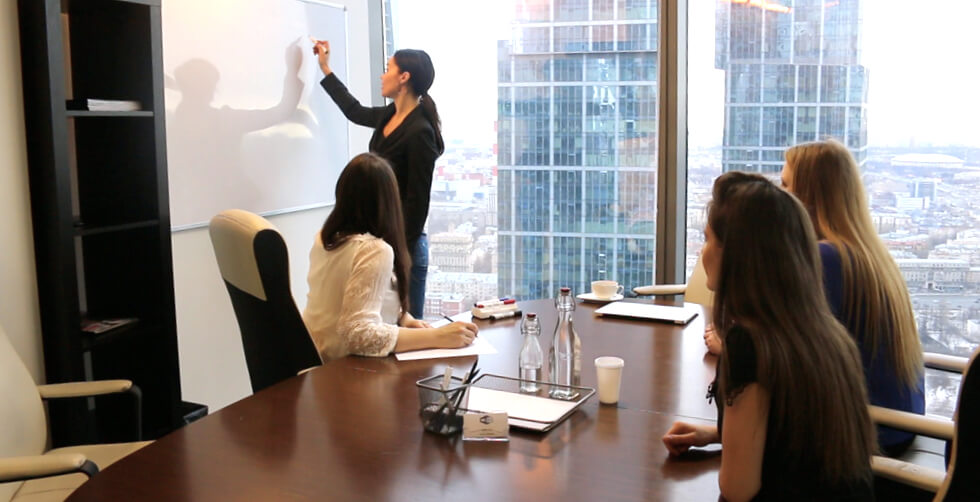

We take the steps that are possible today, like upgrading to more fuel-efficient aircraft and vehicles, and installing more solar panels for our facilities. At the same time, we invest in developing new solutions, such as alternative fuels and advanced technologies, and advocate for changes that could improve our entire industry’s efficiency and environmental performance.
Environmental sustainability
Small amounts saved can make a huge difference over time. The program has created over 45 ongoing initiatives that help FedEx Express minimize environmental impact.
In 2007, FedEx Express launched a program to reduce jet fuel usage. In just eight years, FedEx® Fuel Sense has saved over $1 billion in fuel — more than 408 million gallons, or almost 4 million metric tons of CO2 e — since the program’s inception. How did they do it? With the mantra “Every drop counts.
Connecting people with goods, services, ideas and technologies creates opportunities. Opportunities that build jobs, generate prosperity and lift communities to higher standards of living.
The FedEx Supplier Diversity program was established in 1992 to promote the use of small businesses and those owned by women or minorities throughout the FedEx supply chain. We contract directly with these diverse businesses that are competitive in quality, service and cost. In addition, we encourage the inclusion of women-, minority- and small-owned businesses within the subcontracting plans of our entire supplier base.
Diversity & Inclusion at FedEx connects people and possibilities to deliver a better future for team members, customers, suppliers and communities. Our overarching programs, as well as the initiatives spearheaded by each operating company, are wide-ranging, but our diversity and inclusion efforts boil down to three simple concepts: recruit, develop and advance. By recruiting the best people, training them to be able to take advantage of advancement opportunities, and encouraging them to step into leadership roles, we can ensure our workforce reflects the increasing diversity and complexity of our customers and communities.
What LogosCargo stand for:
- FedEx is consistently named one of the best places to work in the U.S. and in many countries around the world. This recognition reflects our commitment to the highest ethical and professional standards and to improving the lives of our team members in many ways;
- Personal development. Just as we connect people and possibilities around the world, we seek to connect our team members to opportunities, recognizing and developing their full potential;
- We offer a variety of training and leadership programs to help team members excel in their jobs and gain the knowledge and skills they need to get ahead. ;
- Well-being. The success of our business is dependent on the overall well-being of our team members;
- We provide competitive health and financial security benefits across our operating companies, as well as resources to support well-being and work-life balance;
- In 2014, FedEx launched the Healthways Well-Being Program. Our targeted health initiatives — such as well-being coaching, healthier weight and tobacco cessation programs — provide team members with one-on-one coaching and practical tools to make smart choices about their health;
- Diversity and inclusion. A diverse workforce is a key priority for us. While we share the same goals across the enterprise, each FedEx operating company oversees its own diversity policies, multicultural programming and workplace inclusion initiatives;
- Almost half of U.S. team members (46 percent) are minorities. Women in management roles account for more than 22 percent of our global management workforce;
- Safety. At FedEx, priorities may change, but our corporate values never do. In our “Safety above all” culture, safety is a core value — not just a priority — and we live our operational commitment to safety on a daily basis;